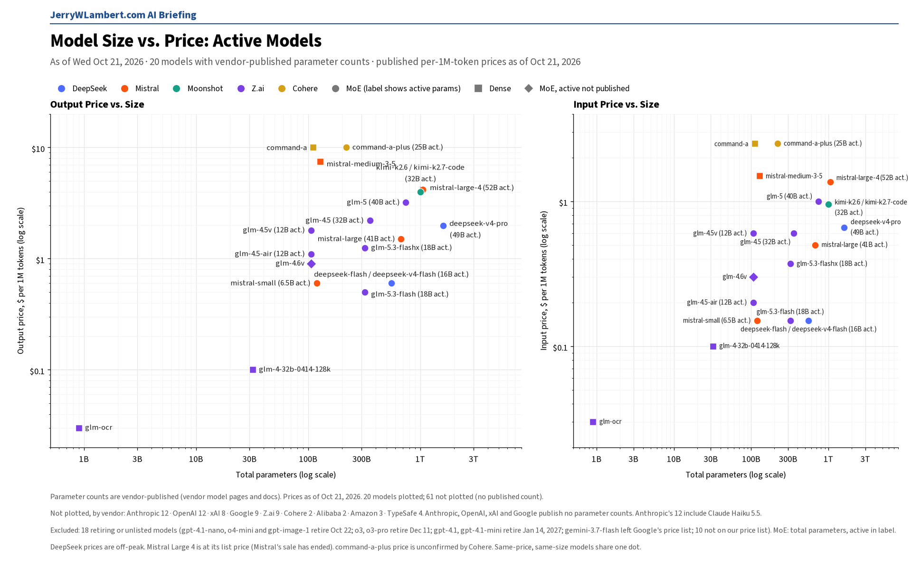
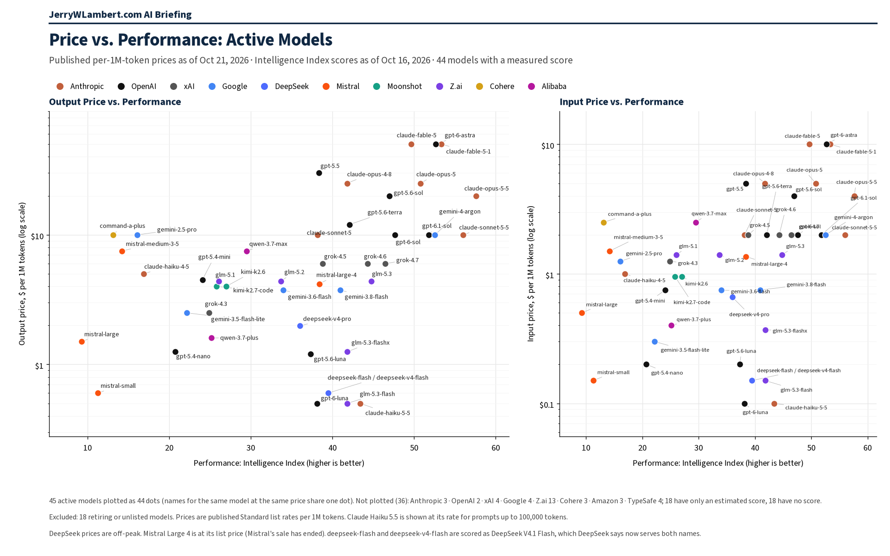

Daily Model Brief, October 21, 2026
Mistral ended its sale on Mistral Large 4, so its list price of $1.36 input, $0.14 cached and $4.18 output per million tokens now applies, twice Tuesday's sale price. No other tracked token price changed, and Xiaomi retired MiMo-V2.5-Pro and MiMo-V2.5 overnight.
Download PDF SubscribeExecutive Summary
Mistral's sale on Mistral Large 4 (mistral-large-4) has ended. Mistral now lists it at $1.36 input, $0.14 cached input and $4.18 output per million tokens. On Tuesday the same line showed a sale price of $0.68 / $0.07 / $2.09. Mistral's model page, checked again at 8:39 AM CT, shows only the list price. Both charts below use the list price.
OpenAI added 12-hour prompt caching to the Responses API on October 20. It keeps shared instructions, tools and context cached across requests that are hours apart, and 12-hour cache writes cost 2.5 times the input token price. OpenAI now shows separate 30-minute and 12-hour cache-write columns. OpenAI's per-model token prices are unchanged.
Xiaomi retired MiMo-V2.5-Pro and MiMo-V2.5 at 10:00 AM Beijing time on October 21 (9:00 PM CT on October 20). Xiaomi says their model IDs no longer work and points users to the V2.6 series (mimo-v2.6-pro, mimo-v2.6-flash). Xiaomi still lists cache writes as limited-time free.
Mistral now lists its Voxtral 3 audio models: Voxtral Mini Transcribe 3 at $0.0035 per minute, Voxtral Small Transcribe 3 at $0.004, Voxtral Mini Transcribe Realtime 3 at $0.008, and Voxtral TTS 3 at $13 per million characters. It also lists a Voice Agents API billed per minute of conversation: $0.04 per minute on Mistral Small 4 and $0.08 on larger models.
Existing shutdown dates are unchanged, and two land tomorrow, Thursday, October 22. Google shuts down Gemini Omni Flash Preview and three Veo 3.1 preview models, and OpenAI's gpt-4.1-nano, o4-mini and gpt-image-1 stop at 7:00 PM CT. Microsoft Foundry now lists Phi-4, Phi-4-mini-instruct, Phi-4-mini-reasoning and Phi-4-multimodal-instruct retiring January 17, 2027.
Anthropic, OpenAI, Google, xAI, DeepSeek, Moonshot, Z.ai, MiniMax, Alibaba, Meta and TypeSafe published no token price changes. Alibaba's Qwen prices could be checked again today. MiniMax now labels its prices "Permanent 50% off" its list price; what you pay is unchanged. Prices from Amazon, ByteDance and IBM could not be confirmed today; Microsoft lists no pay-as-you-go prices and Cohere still publishes no full token matrix (IBM's list price is unchanged).
What This Means for Customers
- If you call
mistral-large-4, budget at $1.36 input, $0.14 cached and $4.18 output per million tokens, twice the sale price that applied through Tuesday. Mistral Large 3 (mistral-large) is unchanged at $0.50 input and $1.50 output. - If you still call
gemini-omni-flash-previewor a Veo 3.1 preview model (veo-3.1-generate-preview,veo-3.1-fast-generate-previeworveo-3.1-lite-generate-preview), finish moving togemini-omni-1.1-flashtoday. Google's shutdown is tomorrow, October 22, and Google gives no time of day. - If you call
gpt-4.1-nano,o4-miniorgpt-image-1, they stop at 7:00 PM CT tomorrow, Thursday, October 22. Google's deep-research-pro preview ends October 23, and Perplexity retires its routes to older OpenAI models at 7:00 PM CT on October 23. - If you called
mimo-v2.5-proormimo-v2.5, those IDs stopped working at 9:00 PM CT last night. Switch tomimo-v2.6-proormimo-v2.6-flash. - If you reuse long shared prompts on OpenAI's Responses API, 12-hour caching can keep them warm between requests hours apart, but each 12-hour cache write costs 2.5 times the input price. Check that your cache-hit rate covers the write cost before switching.
- If you run non-urgent jobs on grok-4.7, grok-4.6 or grok-4.5, xAI lists a 20% Batch API discount for those models on all token types; xAI says most batches complete within 24 hours.
- If your agents search the web through DeepSeek Harness, Claude Code or Codex, those server-side calls start billing at $0.75 per 1,000 successful Search or Fetch requests at 11:00 AM CT on Saturday, October 31. Track this separately from token spend.
- If you run Phi-4 models on Azure Foundry, plan a move before January 17, 2027.
- Claude Haiku 4.5 is still active. Anthropic lists retirement not sooner than October 15, 2026, a date that has passed, and still sets no date. Keep a tested fallback ready.
New Models and Price Changes
Prices in USD per 1M tokens.
| Vendor | Model ID | Status | Input | Cached | Output |
|---|---|---|---|---|---|
| Mistral | mistral-large-4 | Sale ended. List price now applies (Tuesday's sale price: $0.68 / $0.07 / $2.09). | $1.36 | $0.14 | $4.18 |
| Mistral | mistral-large (Mistral Large 3) | Unchanged. | $0.50 | — | $1.50 |
| Mistral | Voxtral Mini Transcribe 3 | Newly listed by Mistral. Per minute of audio. | $0.0035/min | — | — |
| Mistral | Voxtral Small Transcribe 3 | Newly listed. Per minute of audio. | $0.004/min | — | — |
| Mistral | Voxtral Mini Transcribe Realtime 3 | Newly listed. Per minute of audio. | $0.008/min | — | — |
| Mistral | Voxtral TTS 3 | Newly listed. Per million characters. | $13/M chars | — | — |
| Mistral | Voice Agents API | Newly listed. Per minute of conversation: $0.04 on Mistral Small 4, $0.08 on larger models. | $0.04–$0.08/min | — | — |
| OpenAI | 12-hour prompt cache (Responses API) | New Oct 20. 12-hour cache writes cost 2.5 times the input token price. | Write: 2.5x input | — | — |
| xAI | grok-4.7 / grok-4.6 / grok-4.5 (Batch API) | Listed at a 20% batch discount on all token types. | 20% off | 20% off | 20% off |
| OpenAI | gpt-6-luna | Named replacement for GPT-4.1 and GPT-4o models. Unchanged (short context). | $0.10 | $0.01 | $0.50 |
| gemini-4-argon | Unchanged. Paid tier only. Launch price through Nov 30, 2026 (thinking billed as output). | $2.00 | $0.10 | $10.00 | |
| gemini-4-argon (from Dec 1, 2026) | Scheduled Standard price printed by Google. | $4.00 | $0.20 | $20.00 | |
| Anthropic | claude-opus-5-5 (fast mode) | Unchanged. Twice the standard rate; no beta header needed. | $8.00 | Not listed | $40.00 |
| MiniMax | MiniMax-M3.1-Flash | Unchanged. Now labeled "Permanent 50% off" list. | $0.15 | $0.015 | $0.60 |
| MiniMax | MiniMax-M3 (up to 512K input) | Unchanged. "Permanent 50% off" list ($0.60 / $0.12 / $2.40). | $0.30 | $0.06 | $1.20 |
| DeepSeek | Search API / Fetch API | Unchanged. Billing for calls through DeepSeek Harness, Claude Code and Codex starts Oct 31, 11:00 AM CT. $0.75 per 1,000 successful requests each. | Per request | — | Per request |
| DeepSeek | deepseek-flash | Unchanged. Off-peak price shown. | $0.15 | $0.003 | $0.60 |
| Meta | muse-wonder-1.0 | Unchanged (preview). | $4.00 | $0.20 | $20.00 |
| TypeSafe | jev-1.14.0 / jev-preview | Unchanged. jev-preview points here; output free. | $0.042 | — | $0 |
| TypeSafe | jev-1.13.0 / jev-latest | Unchanged. jev-latest still points here. | $0.042 | — | $0 |
| Alibaba | qwen3.7-max | Unchanged; checked again today. Cached input is 20% of input. | $2.50 | $0.50 | $7.50 |
| Alibaba | qwen3.8-max | Unchanged; checked again today. | $2.00 | — | $6.00 |
| IBM | granite-4-h-small | Unchanged. Not confirmed today. | $0.0636 | Not listed | $0.265 |
- One token price changed today: Mistral Large 4. Every price above is current as of this morning.
- OpenAI also lists, on October 16, an Ultrafast mode for the Agents API (set agent.service_tier to ultrafast on a supported model) and Artifact SDK skills in OpenAI-hosted sandboxes for spreadsheets, presentations and Word documents. Those entries give no price.
- Anthropic's October 20 release notes: user profiles (new /v1/user_profiles endpoints) let platforms, gateways and resellers tell Anthropic which end customer each request is for, so a safety enforcement action can apply to one end customer instead of the whole organization. Organization webhooks are in beta on the Admin API, and inference hooks are out of beta for Claude Enterprise. None carries a price.
- Cohere added Rerank 5, in Pro and Fast tiers, with a Context Focus feature that returns the most relevant passages within each document. Cohere shows no price for it.
- Google's pricing, models and deprecation pages are unchanged since Tuesday, including Gemini 4 Argon's launch price through November 30 and Grounding with Google Search at 5,000 free requests per month, then $14 per 1,000.
- Prices from Amazon, ByteDance and IBM could not be confirmed today; Microsoft lists no pay-as-you-go prices and Cohere still publishes no full token matrix. Their last confirmed prices stand.
Deprecations
| Vendor | Model ID | Shutdown (CT) | Replacement | Note |
|---|---|---|---|---|
| OpenAI | gpt-4.1-nano o4-mini gpt-image-1 | Thu Oct 22, 2026, 7:00 PM CT | gpt-5.6-luna gpt-5.6-terra gpt-image-2.5-sunburst or gpt-image-2.5-flare | Unchanged. Tomorrow. OpenAI lists Oct 23 with no time; 7:00 PM CT Oct 22 is 00:00 UTC Oct 23. |
| gemini-omni-flash-preview | Thu Oct 22, 2026 (time not stated) | gemini-omni-1.1-flash | Unchanged. Tomorrow. | |
| veo-3.1-generate-preview veo-3.1-fast-generate-preview veo-3.1-lite-generate-preview | Thu Oct 22, 2026 (time not stated) | gemini-omni-1.1-flash | Unchanged. Tomorrow. | |
| Xiaomi | mimo-v2.5-pro mimo-v2.5 | Tue Oct 20, 2026, 9:00 PM CT (retired) | mimo-v2.6-pro mimo-v2.6-flash | Retired at 10:00 Beijing time Oct 21. Xiaomi says the model IDs no longer work. |
| deep-research-pro-preview-12-2025 | Fri Oct 23, 2026 (time not stated) | deep-research-preview-04-2026 | Unchanged. | |
| Microsoft (Azure) | Ministral-3B mistral-medium-2505 mistral-small-2503 | Wed Dec 9, 2026 (time not stated) | ministral-ministral-4b-instruct mistral-medium-3-5 mistral-small-4-119b-2603 | Unchanged. Applies to Azure deployments, not Mistral's own API. |
| OpenAI | gpt-4.1 (gpt-4.1-2025-04-14) gpt-4.1-mini (gpt-4.1-mini-2025-04-14) | Wed Jan 13, 2027, 6:00 PM CT | gpt-6-luna | Unchanged since Oct 14. OpenAI lists Jan 14, 2027 with no time; 6:00 PM CT Jan 13 is 00:00 UTC Jan 14. Each is the only listed snapshot, so the plain names stop too. |
| OpenAI | gpt-4o-2024-08-06 gpt-4o-2024-11-20 gpt-4o-mini-2024-07-18 | Wed Jan 13, 2027, 6:00 PM CT | gpt-6-luna | Unchanged since Oct 14. Same notice and timing. Fine-tuned versions follow the same schedule. |
| Microsoft (Azure) | Phi-4 Phi-4-mini-instruct Phi-4-mini-reasoning Phi-4-multimodal-instruct | Sun Jan 17, 2027 (time not stated) | microsoft--phi-4 (Foundry Managed Compute) | Newly listed on Microsoft's Foundry retirement page. Applies to Azure Foundry deployments. |
| gemini-3.5-flash | Not shutting down (Google lists N/A) | gemini-3.6-flash (Google auto-route) | Unchanged since Oct 12. Google routes requests automatically. | |
| gemini-3.7-flash | Not shutting down (Google lists N/A) | gemini-3.8-flash (Google auto-route) | Unchanged since Oct 12. Same wording as gemini-3.5-flash. | |
| gemini-3.1-flash-image | No shutdown date announced | gemini-nano-banana-2.1 | Unchanged. | |
| gemini-3.1-flash-tts-preview gemini-2.5-flash-preview-tts gemini-2.5-pro-preview-tts | Tue Nov 17, 2026 (time not stated) | gemini-3.8-flash-tts or gemini-3.8-flash-lite-tts | Unchanged. | |
| gemini-3.1-flash-live-preview gemini-2.5-flash-native-audio-preview-12-2025 | Tue Nov 17, 2026 (time not stated) | gemini-3.8-live | Unchanged. | |
| Anthropic | claude-sonnet-4-5-20250929 | Mon Nov 30, 2026 (time not stated) | claude-sonnet-5-5 | Unchanged. |
| Anthropic | claude-haiku-4-5-20251001 | Not sooner than Thu Oct 15, 2026; no date set | None named | Watch item. The earliest date has passed; still active on Anthropic's deprecations page today with no date set. |
| Cohere | command-r command-r-plus | Deprecated Sep 15, 2025; no shutdown date set | command-r-08-2024 command-r-plus-08-2024 command-a-03-2025 | Closed to new customers; existing users keep access until retirement. |
- Perplexity will retire its Agent API and Orchestrator API routes to older OpenAI models (openai/gpt-5.4, gpt-5.4-mini, gpt-5.4-nano, gpt-5.2, gpt-5.1, gpt-5 and gpt-5-mini) at 7:00 PM CT on Fri Oct 23, 2026 (00:00 UTC Oct 24). Unchanged.
- Microsoft Foundry still lists claude-opus-5-5-fast (version 2) on Azure retiring Fri Jan 15, 2027, with no replacement named.
- OpenAI's earlier notices are unchanged: gpt-5.3-codex, gpt-5.1 and gpt-5.4-nano shut down April 1, 2027, and the /v1/audio/translations endpoint shuts down February 26, 2027, replaced by v1/realtime/translations.
- No other shutdown dates moved since Tuesday at Anthropic, Google, OpenAI or Cohere.
- Unverified: Google's deprecation schedule still shows gemini-2.5-flash-image shutting down Mon Mar 15, 2027, with gemini-3.1-flash-lite-image as the replacement, while its price list says it shut down Oct 2, 2026. Confirm with Google before you budget either date.
Agent Platforms
Hosted AI agents that come with their own persistent cloud computer.
- Grok Bot: its own persistent cloud computer, one per user, with no separate computer charge found; usage comes from a weekly pool, then prepaid top-ups. No change since its October 14 release.
- dots (OpenAI): OpenAI says a dot "has its own cloud computer"; the first dot comes with Pro and Business Premium "at no extra cost." Runs on GPT-6 Astra. OpenAI updated this guidance this week; texting is a beta limited to US Pro users.
- Muse (Meta): "You and your Muse share your own dedicated computer in the cloud." Runs on Muse Spark 1.3, whose API price is unchanged at $1.25 input, $0.15 cached and $4.25 output per million tokens. Billing is unverified today.
- Manus: ordinary tasks get a temporary sandbox; the Cloud Computer add-on is a persistent server billed separately at $30 a month (2 vCPU, 4 GB) or $50 a month (2 vCPU, 8 GB). No change.
- Genspark Claw: a "dedicated cloud computer provisioned just for you," billed separately as a Lite, Standard or Powerful Cloud Computer subscription plus credits; Genspark publishes no dollar amounts. No change.
Model Size vs. Price

Across the 20 active models whose vendors publish parameter counts, price rises only loosely with total size (rank correlation 0.41 on output price). Anthropic, OpenAI, xAI and Google publish no parameter counts, so their models, including Claude Haiku 5.5, GPT-6.1 Sol and Gemini 4 Argon, are not plotted. The one plotted price that changed since Tuesday is Mistral Large 4, now at its $1.36 / $4.18 list price. Prices as of October 21, 2026.
Price vs. Performance

Across the 45 active models with an Intelligence Index score, price rises with performance only loosely (rank correlation 0.46 on output price). Claude Haiku 5.5 leads at $0.50 or less (43.4); GPT-6.1 Sol scores 51.8 and Gemini 4 Argon 52.6, each at $10. Scores as of October 16, 2026; prices as of October 21, 2026.
All times Central. Vendor prices, dates and model IDs are as of 8:50 AM CT on October 21, 2026. Chart prices are as of October 21, 2026. Performance scores are as of October 16, 2026. Items that could not be confirmed are marked unverified.